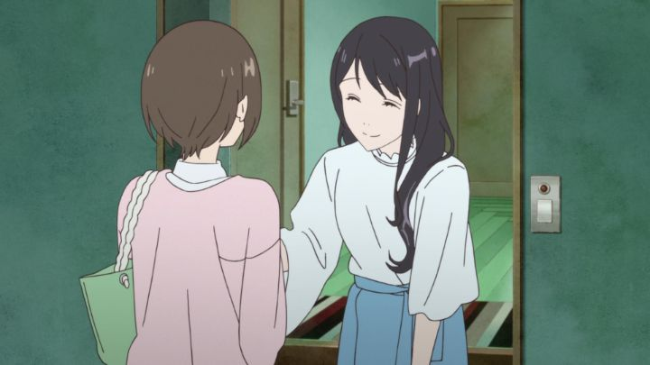

"Fragtime" is a romance OVA, practically a film at its 60-minute runtime. It starts with promise, showing a shy high school girl (Moritani) being addressed by a fellow student. Scared by the moment, she stops time, running away while the world remains frozen around her. Without explanation to this superpower, it still presents a strong premise of how such a person might use that power to avoid human interaction.... but then Moritani comes across Murakami, a popular girl, during this frozen spell. Seemingly struck by her beauty, Moritani kneels down to... take a peak under her skirt. For some reason, Murakami becomes un-frozen during the interaction, catching her in the act. Seeing fun in the discovery, she blackmails Moritani into doing what she says to prevent her blabbing about her being a pervert. It's a strange tagline, and is as problematic as it sounds. It's a shame, since the rest of this romantic-drama has a little more to it. The two girls have a strange dynamic, with Murakami being out-going and social, and Moritani being the exact opposite. And unlike others, she can't just freeze time and run away, since the spell is now undone on this new friend. And the popular girl recognizes that Moritani probably has a crush on her, eventually initiating a romance with her. Yes, this is a girls' romance ("yuri"). But things get increasingly more daring, as Murakami seems eager to "break the rules" and expectations around her, and Moritani slowly gets used to getting out of her shell with others in the class. Those more daring scenes aren't too explicit, but is certainly exciting for what might be in a teen-novel. But it's also problematic again, showing the girls as flawed human beings who make mistakes, and the cruelty of other students... and naturally, it's hard to watch. At times, the film tries to make the story more philosophical, writing words in the sand, and using metaphors to describe how these characters feel. But it frequently feels juvenille and immature instead.  I suppose I prefer a sweetness when it comes to romance. If there's uncomfortable depth to the characters, I'd prefer there to be more time to flesh out those details. Here, despite any flaws, the characters still feel one-dimensional, or at most, two-dimensional, and those flaws just make them unlikable. Mabye a longer runtime (a full-length film, or a three to six-episode series) would have allowed me to appreciate these characters and their relationships in "Fragtime" better. At least the ending was a climatic revelation.But boy, the production values are a disappointment. Characters are flat, sort of like Mamoru Hosoda's work, but not particularly well designed or expressive. There isn't a lot of detail, and not a lot of animation. There are a few brief moments of beauty and detailed character rendering, but these are too few to save what was clearly a low-budget effort. Music might be the one positive aspect, when it's there, but the OVA is largely silent without music at all (it's best on display during the end credits, a score that would feel at home in a high-budget Pixar movie: for me, new composer Rionos is now one to look out for).And the American English dub by Sentai Filmworks is also poor. These are young characters with shy personalities, which may be hard to voice in English, but regardless, this is certainly a modern case where the dub just isn't a good substitute for the original Japanese. In fact, this more unorthadox but rooted-in-emotion story feels at home for a live-action J-Drama. There are a lot of interesting ideas to the characters and how they try to connect in 'Fragtime." But this OVA is a little too short, and not quite written or animated well enough to do those ideas justice.
- "Ani" More reviews can be found at : https://2danicritic.github.io/ Previous review: review_Fortune_Favors_Lady_Nikuko Next review: review_Fritz_the_Cat